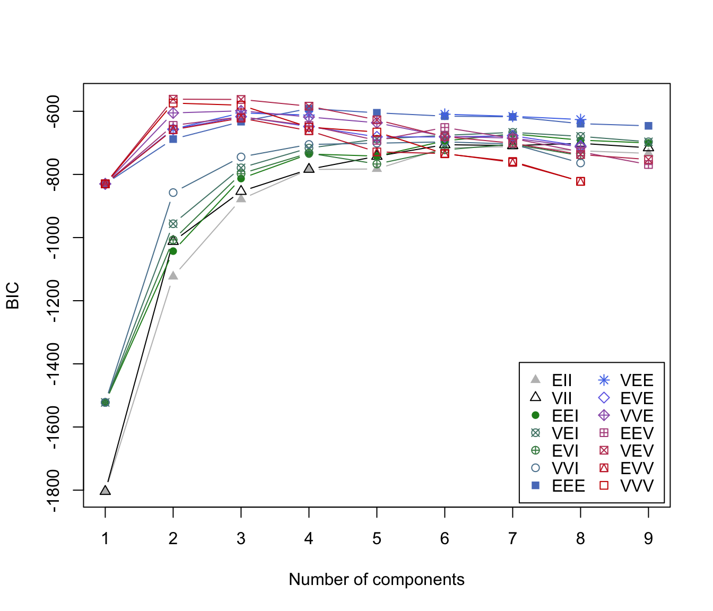
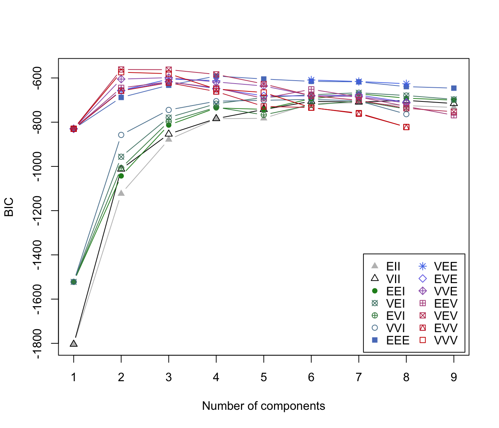
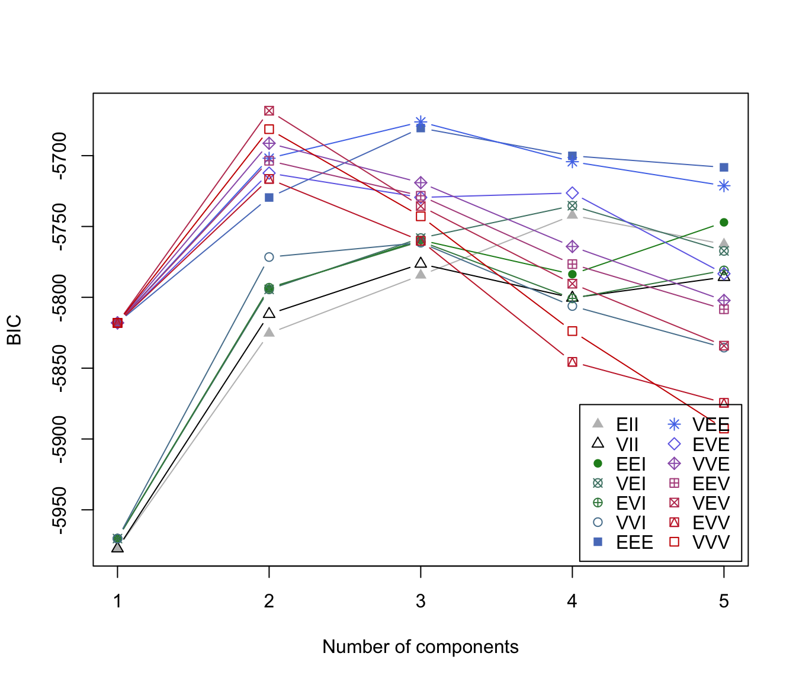
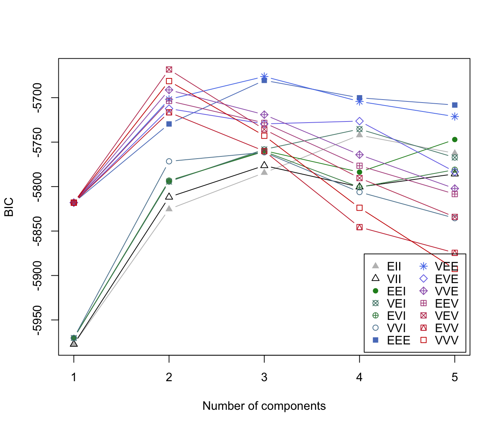

BIC for Model-Based Clustering
mclustBIC.RdBIC for parameterized Gaussian mixture models fitted by EM algorithm initialized by model-based hierarchical clustering.
mclustBIC(data, G = NULL, modelNames = NULL,
prior = NULL, control = emControl(),
initialization = list(hcPairs = NULL,
subset = NULL,
noise = NULL),
Vinv = NULL, warn = mclust.options("warn"),
x = NULL, verbose = interactive(),
...)Arguments
- data
A numeric vector, matrix, or data frame of observations. Categorical variables are not allowed. If a matrix or data frame, rows correspond to observations and columns correspond to variables.
- G
An integer vector specifying the numbers of mixture components (clusters) for which the BIC is to be calculated. The default is
G=1:9, unless the argumentxis specified, in which case the default is taken from the values associated withx.- modelNames
A vector of character strings indicating the models to be fitted in the EM phase of clustering. The help file for
mclustModelNamesdescribes the available models. The default is:c("E", "V")for univariate data
mclust.options("emModelNames")for multivariate data (n > d)
c("EII", "VII", "EEI", "EVI", "VEI", "VVI")the spherical and diagonal models for multivariate data (n <= d)
unless the argument
xis specified, in which case the default is taken from the values associated withx.- prior
The default assumes no prior, but this argument allows specification of a conjugate prior on the means and variances through the function
priorControl.- control
A list of control parameters for EM. The defaults are set by the call
emControl().- initialization
A list containing zero or more of the following components:
hcPairsA matrix of merge pairs for hierarchical clustering such as produced by function
hc.
For multivariate data, the default is to compute a hierarchical agglomerative clustering tree by applying functionhcwith model specified bymclust.options("hcModelName"), and data transformation set bymclust.options("hcUse").
All the input or a subset as indicated by thesubsetargument is used for initial clustering.
The hierarchical clustering results are then used to start the EM algorithm from a given partition.
For univariate data, the default is to use quantiles to start the EM algorithm. However, hierarchical clustering could also be used by callinghcwith model specified as"V"or"E".subsetA logical or numeric vector specifying a subset of the data to be used in the initial hierarchical clustering phase. By default no subset is used unless the number of observations exceeds the value specified by
mclust.options("subset"). Thesubsetargument is ignored ifhcPairsare provided. Note that to guarantee exact reproducibility of results a seed must be specified (seeset.seed).noiseA logical or numeric vector indicating an initial guess as to which observations are noise in the data. If numeric the entries should correspond to row indexes of the data. If supplied, a noise term will be added to the model in the estimation.
- Vinv
An estimate of the reciprocal hypervolume of the data region. The default is determined by applying function
hypvolto the data. Used only if an initial guess as to which observations are noise is supplied.- warn
A logical value indicating whether or not certain warnings (usually related to singularity) should be issued when estimation fails. The default is controlled by
mclust.options.- x
An object of class
'mclustBIC'. If supplied,mclustBICwill use the settings inxto produce another object of class'mclustBIC', but withGandmodelNamesas specified in the arguments. Models that have already been computed inxare not recomputed. All arguments tomclustBICexceptdata,GandmodelNameare ignored and their values are set as specified in the attributes ofx. Defaults forGandmodelNamesare taken fromx.- verbose
A logical controlling if a text progress bar is displayed during the fitting procedure. By default is
TRUEif the session is interactive, andFALSEotherwise.- ...
Catches unused arguments in indirect or list calls via
do.call.
Value
Return an object of class 'mclustBIC' containing the Bayesian Information
Criterion for the specified mixture models numbers of clusters.
Auxiliary information returned as attributes.
The corresponding print method shows the matrix of values and the top models according to the BIC criterion.
References
Scrucca L., Fop M., Murphy T. B. and Raftery A. E. (2016) mclust 5: clustering, classification and density estimation using Gaussian finite mixture models, The R Journal, 8/1, pp. 289-317.
Fraley C. and Raftery A. E. (2002) Model-based clustering, discriminant analysis and density estimation, Journal of the American Statistical Association, 97/458, pp. 611-631.
Fraley C., Raftery A. E., Murphy T. B. and Scrucca L. (2012) mclust Version 4 for R: Normal Mixture Modeling for Model-Based Clustering, Classification, and Density Estimation. Technical Report No. 597, Department of Statistics, University of Washington.
See also
summary.mclustBIC,
priorControl,
emControl,
mclustModel,
hc,
me,
mclustModelNames,
mclust.options
Examples
irisBIC <- mclustBIC(iris[,-5])
irisBIC
#> Bayesian Information Criterion (BIC):
#> EII VII EEI VEI EVI VVI EEE
#> 1 -1804.0854 -1804.0854 -1522.1202 -1522.1202 -1522.1202 -1522.1202 -829.9782
#> 2 -1123.4117 -1012.2352 -1042.9679 -956.2823 -1007.3082 -857.5515 -688.0972
#> 3 -878.7650 -853.8144 -813.0504 -779.1566 -797.8342 -744.6382 -632.9647
#> 4 -893.6140 -812.6048 -827.4036 -748.4529 -837.5452 -751.0198 -646.0258
#> 5 -782.6441 -742.6083 -741.9185 -688.3463 -766.8158 -711.4502 -604.8131
#> 6 -715.7136 -705.7811 -693.7908 -676.1697 -774.0673 -707.2901 -609.8543
#> 7 -731.8821 -698.5413 -713.1823 -680.7377 -813.5220 -766.6500 -632.4947
#> 8 -725.0805 -701.4806 -691.4133 -679.4640 -740.4068 -764.1969 -639.2640
#> 9 -694.5205 -700.0276 -696.2607 -702.0143 -767.8044 -755.8290 -653.0878
#> VEE EVE VVE EEV VEV EVV VVV
#> 1 -829.9782 -829.9782 -829.9782 -829.9782 -829.9782 -829.9782 -829.9782
#> 2 -656.3270 -657.2263 -605.1841 -644.5997 -561.7285 -658.3306 -574.0178
#> 3 -605.3982 -666.5491 -636.4259 -644.7810 -562.5522 -656.0359 -580.8396
#> 4 -604.8371 -705.5435 -639.7078 -699.8684 -602.0104 -725.2925 -630.6000
#> 5 NA -723.7199 -632.2056 -652.2959 -634.2890 NA -676.6061
#> 6 -609.5584 -661.9497 -664.8224 -664.4537 -679.5116 NA -754.7938
#> 7 NA -699.5102 -690.6108 -709.9530 -704.7699 -809.8276 -806.9277
#> 8 -654.8237 -700.4277 -709.9392 -735.4463 -712.8788 -831.7520 -830.6373
#> 9 NA -729.6651 -734.2997 -758.9348 -748.8237 -882.4391 -883.6931
#>
#> Top 3 models based on the BIC criterion:
#> VEV,2 VEV,3 VVV,2
#> -561.7285 -562.5522 -574.0178
plot(irisBIC)
 # \donttest{
subset <- sample(1:nrow(iris), 100)
irisBIC <- mclustBIC(iris[,-5], initialization=list(subset = subset))
irisBIC
#> Bayesian Information Criterion (BIC):
#> EII VII EEI VEI EVI VVI EEE
#> 1 -1804.0854 -1804.0854 -1522.1202 -1522.1202 -1522.1202 -1522.1202 -829.9782
#> 2 -1123.4117 -1012.2352 -1042.9679 -956.2823 -1007.3082 -857.5515 -688.0972
#> 3 -878.7659 -853.8165 -813.0533 -779.1559 -797.8342 -744.6368 -632.9660
#> 4 -784.3112 -783.8307 -735.4850 -716.5264 -732.5176 -705.0711 -591.4084
#> 5 -782.6521 -742.6090 -741.9032 -688.3482 -766.9567 -701.0654 -604.8035
#> 6 -715.7154 -705.7822 -693.7986 -676.1748 -722.1504 -696.9013 -615.4926
#> 7 -712.0972 -708.7218 -671.6761 -666.8674 -704.1598 -703.6990 -617.6082
#> 8 -725.0789 -701.4827 -691.4089 -679.4849 -740.4069 -763.6683 -639.2614
#> 9 -733.3455 -715.6034 -700.3356 -696.7088 NA NA -646.0805
#> VEE EVE VVE EEV VEV EVV VVV
#> 1 -829.9782 -829.9782 -829.9782 -829.9782 -829.9782 -829.9782 -829.9782
#> 2 -656.3270 -657.2263 -605.1837 -644.5997 -561.7285 -658.3306 -574.0178
#> 3 -605.3979 -616.9866 -598.5722 -617.7016 -562.5518 -621.5195 -580.8401
#> 4 -611.9257 -648.3776 -618.0512 -645.1510 -583.8280 -661.5276 -650.2903
#> 5 NA -680.9392 -636.3978 -692.2011 -627.1185 -728.5995 -665.6503
#> 6 -609.3415 -681.3988 -679.8025 -651.3897 -680.4273 -733.8353 -734.6344
#> 7 -616.0475 -677.4451 -684.8859 -686.0076 -701.0669 -761.7705 -759.0121
#> 8 -626.1436 -709.8801 -712.8556 -728.4795 -737.0126 -821.8125 -822.0800
#> 9 NA NA NA -768.6726 -752.7622 NA NA
#>
#> Top 3 models based on the BIC criterion:
#> VEV,2 VEV,3 VVV,2
#> -561.7285 -562.5518 -574.0178
plot(irisBIC)

irisBIC1 <- mclustBIC(iris[,-5], G=seq(from=1,to=9,by=2),
modelNames=c("EII", "EEI", "EEE"))
irisBIC1
#> Bayesian Information Criterion (BIC):
#> EII EEI EEE
#> 1 -1804.0854 -1522.1202 -829.9782
#> 3 -878.7650 -813.0504 -632.9647
#> 5 -782.6441 -741.9185 -604.8131
#> 7 -731.8821 -713.1823 -632.4947
#> 9 -694.5205 -696.2607 -653.0878
#>
#> Top 3 models based on the BIC criterion:
#> EEE,5 EEE,7 EEE,3
#> -604.8131 -632.4947 -632.9647
plot(irisBIC1)
# \donttest{
subset <- sample(1:nrow(iris), 100)
irisBIC <- mclustBIC(iris[,-5], initialization=list(subset = subset))
irisBIC
#> Bayesian Information Criterion (BIC):
#> EII VII EEI VEI EVI VVI EEE
#> 1 -1804.0854 -1804.0854 -1522.1202 -1522.1202 -1522.1202 -1522.1202 -829.9782
#> 2 -1123.4117 -1012.2352 -1042.9679 -956.2823 -1007.3082 -857.5515 -688.0972
#> 3 -878.7659 -853.8165 -813.0533 -779.1559 -797.8342 -744.6368 -632.9660
#> 4 -784.3112 -783.8307 -735.4850 -716.5264 -732.5176 -705.0711 -591.4084
#> 5 -782.6521 -742.6090 -741.9032 -688.3482 -766.9567 -701.0654 -604.8035
#> 6 -715.7154 -705.7822 -693.7986 -676.1748 -722.1504 -696.9013 -615.4926
#> 7 -712.0972 -708.7218 -671.6761 -666.8674 -704.1598 -703.6990 -617.6082
#> 8 -725.0789 -701.4827 -691.4089 -679.4849 -740.4069 -763.6683 -639.2614
#> 9 -733.3455 -715.6034 -700.3356 -696.7088 NA NA -646.0805
#> VEE EVE VVE EEV VEV EVV VVV
#> 1 -829.9782 -829.9782 -829.9782 -829.9782 -829.9782 -829.9782 -829.9782
#> 2 -656.3270 -657.2263 -605.1837 -644.5997 -561.7285 -658.3306 -574.0178
#> 3 -605.3979 -616.9866 -598.5722 -617.7016 -562.5518 -621.5195 -580.8401
#> 4 -611.9257 -648.3776 -618.0512 -645.1510 -583.8280 -661.5276 -650.2903
#> 5 NA -680.9392 -636.3978 -692.2011 -627.1185 -728.5995 -665.6503
#> 6 -609.3415 -681.3988 -679.8025 -651.3897 -680.4273 -733.8353 -734.6344
#> 7 -616.0475 -677.4451 -684.8859 -686.0076 -701.0669 -761.7705 -759.0121
#> 8 -626.1436 -709.8801 -712.8556 -728.4795 -737.0126 -821.8125 -822.0800
#> 9 NA NA NA -768.6726 -752.7622 NA NA
#>
#> Top 3 models based on the BIC criterion:
#> VEV,2 VEV,3 VVV,2
#> -561.7285 -562.5518 -574.0178
plot(irisBIC)

irisBIC1 <- mclustBIC(iris[,-5], G=seq(from=1,to=9,by=2),
modelNames=c("EII", "EEI", "EEE"))
irisBIC1
#> Bayesian Information Criterion (BIC):
#> EII EEI EEE
#> 1 -1804.0854 -1522.1202 -829.9782
#> 3 -878.7650 -813.0504 -632.9647
#> 5 -782.6441 -741.9185 -604.8131
#> 7 -731.8821 -713.1823 -632.4947
#> 9 -694.5205 -696.2607 -653.0878
#>
#> Top 3 models based on the BIC criterion:
#> EEE,5 EEE,7 EEE,3
#> -604.8131 -632.4947 -632.9647
plot(irisBIC1)
 irisBIC2 <- mclustBIC(iris[,-5], G=seq(from=2,to=8,by=2),
modelNames=c("VII", "VVI", "VVV"), x= irisBIC1)
irisBIC2
#> Bayesian Information Criterion (BIC):
#> VII VVI VVV
#> 2 -1012.2352 -857.5515 -574.0178
#> 4 -812.6048 -751.0198 -630.6000
#> 6 -705.7811 -707.2901 -754.7938
#> 8 -701.4806 -764.1969 -830.6373
#>
#> Top 3 models based on the BIC criterion:
#> VVV,2 VVV,4 VII,8
#> -574.0178 -630.6000 -701.4806
plot(irisBIC2)
# }
nNoise <- 450
set.seed(0)
poissonNoise <- apply(apply( iris[,-5], 2, range), 2, function(x, n)
runif(n, min = x[1]-.1, max = x[2]+.1), n = nNoise)
set.seed(0)
noiseInit <- sample(c(TRUE,FALSE),size=nrow(iris)+nNoise,replace=TRUE,
prob=c(3,1))
irisNdata <- rbind(iris[,-5], poissonNoise)
irisNbic <- mclustBIC(data = irisNdata, G = 1:5,
initialization = list(noise = noiseInit))
irisNbic
#> Bayesian Information Criterion (BIC):
#> EII VII EEI VEI EVI VVI EEE
#> 1 -5977.328 -5977.328 -5970.295 -5970.295 -5970.295 -5970.295 -5818.060
#> 2 -5825.418 -5811.834 -5793.901 -5794.428 -5793.223 -5771.583 -5729.552
#> 3 -5784.436 -5776.384 -5759.590 -5758.183 -5760.461 -5761.447 -5680.523
#> 4 -5742.152 -5800.378 -5783.724 -5735.333 -5800.756 -5806.164 -5700.137
#> 5 -5762.520 -5785.749 -5747.083 -5767.262 -5781.001 -5835.520 -5708.260
#> VEE EVE VVE EEV VEV EVV VVV
#> 1 -5818.060 -5818.031 -5818.031 -5818.060 -5818.060 -5818.060 -5818.060
#> 2 -5701.834 -5712.321 -5691.272 -5703.614 -5668.290 -5716.434 -5681.315
#> 3 -5676.189 -5729.474 -5719.089 -5728.321 -5735.599 -5760.094 -5742.833
#> 4 -5704.279 -5726.343 -5764.130 -5776.571 -5790.380 -5845.565 -5823.840
#> 5 -5721.212 -5783.338 -5802.206 -5808.419 -5834.126 -5874.462 -5892.635
#>
#> Top 3 models based on the BIC criterion:
#> VEV,2 VEE,3 EEE,3
#> -5668.290 -5676.189 -5680.523
plot(irisNbic)

irisBIC2 <- mclustBIC(iris[,-5], G=seq(from=2,to=8,by=2),
modelNames=c("VII", "VVI", "VVV"), x= irisBIC1)
irisBIC2
#> Bayesian Information Criterion (BIC):
#> VII VVI VVV
#> 2 -1012.2352 -857.5515 -574.0178
#> 4 -812.6048 -751.0198 -630.6000
#> 6 -705.7811 -707.2901 -754.7938
#> 8 -701.4806 -764.1969 -830.6373
#>
#> Top 3 models based on the BIC criterion:
#> VVV,2 VVV,4 VII,8
#> -574.0178 -630.6000 -701.4806
plot(irisBIC2)
# }
nNoise <- 450
set.seed(0)
poissonNoise <- apply(apply( iris[,-5], 2, range), 2, function(x, n)
runif(n, min = x[1]-.1, max = x[2]+.1), n = nNoise)
set.seed(0)
noiseInit <- sample(c(TRUE,FALSE),size=nrow(iris)+nNoise,replace=TRUE,
prob=c(3,1))
irisNdata <- rbind(iris[,-5], poissonNoise)
irisNbic <- mclustBIC(data = irisNdata, G = 1:5,
initialization = list(noise = noiseInit))
irisNbic
#> Bayesian Information Criterion (BIC):
#> EII VII EEI VEI EVI VVI EEE
#> 1 -5977.328 -5977.328 -5970.295 -5970.295 -5970.295 -5970.295 -5818.060
#> 2 -5825.418 -5811.834 -5793.901 -5794.428 -5793.223 -5771.583 -5729.552
#> 3 -5784.436 -5776.384 -5759.590 -5758.183 -5760.461 -5761.447 -5680.523
#> 4 -5742.152 -5800.378 -5783.724 -5735.333 -5800.756 -5806.164 -5700.137
#> 5 -5762.520 -5785.749 -5747.083 -5767.262 -5781.001 -5835.520 -5708.260
#> VEE EVE VVE EEV VEV EVV VVV
#> 1 -5818.060 -5818.031 -5818.031 -5818.060 -5818.060 -5818.060 -5818.060
#> 2 -5701.834 -5712.321 -5691.272 -5703.614 -5668.290 -5716.434 -5681.315
#> 3 -5676.189 -5729.474 -5719.089 -5728.321 -5735.599 -5760.094 -5742.833
#> 4 -5704.279 -5726.343 -5764.130 -5776.571 -5790.380 -5845.565 -5823.840
#> 5 -5721.212 -5783.338 -5802.206 -5808.419 -5834.126 -5874.462 -5892.635
#>
#> Top 3 models based on the BIC criterion:
#> VEV,2 VEE,3 EEE,3
#> -5668.290 -5676.189 -5680.523
plot(irisNbic)
